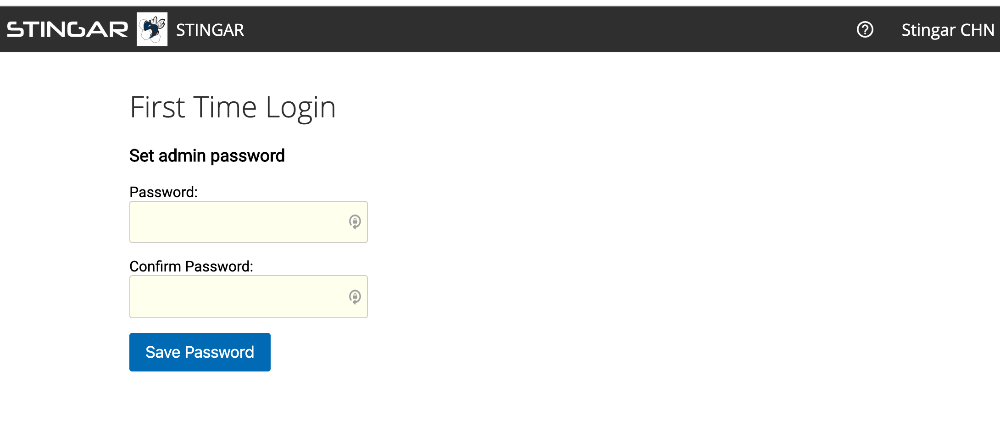
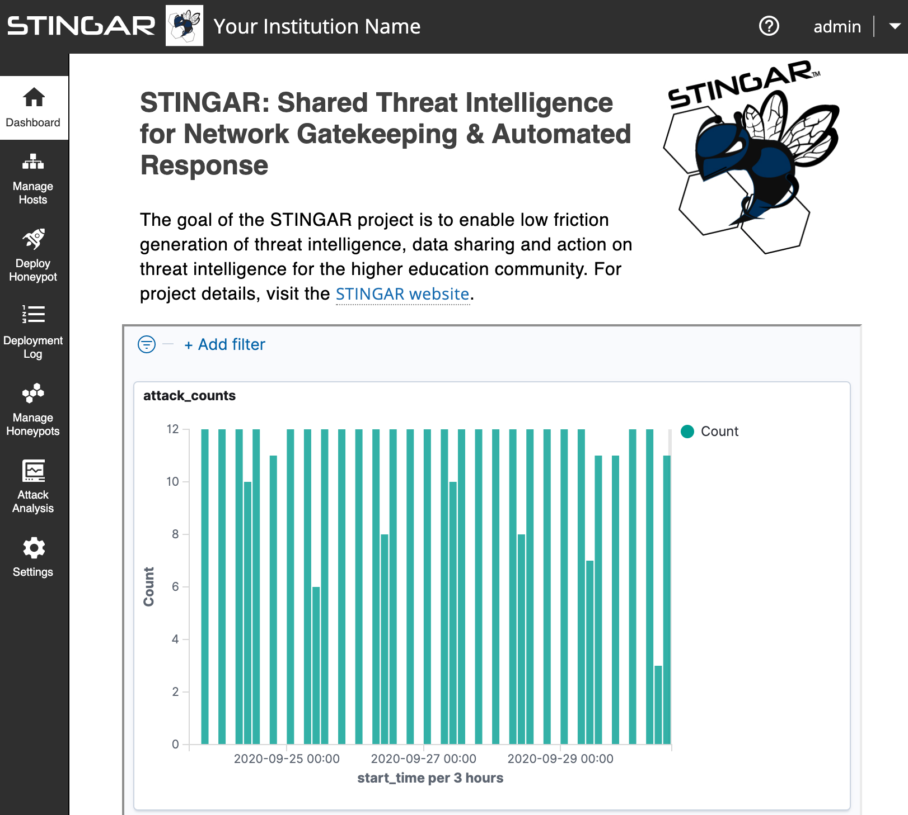

Launch STINGAR
With STINGAR downloaded & configured (assuming you're logged on to the server as the STINGAR user in the 'stingar' directory where it resides) enter:
docker-compose up -d
It can take up to 15 minutes to startup the first time. Monitor progress with this command:
docker-compose logs -f stingarui
STINGAR is ready when the log output stops scrolling & you see:
- stingarui_1 | * Environment: production
- stingarui_1 | * Listening on tcp://0.0.0.0:3000
- stingarui_1 | Use Ctrl-C to stop
Access STINGAR From a Browser
You may access STINGAR by entering the URL or domain name of your host machine into a browser. You must prefix your STINGAR hostname with https://
In the initial browser view, you'll likely see a message about a potential security risk that recommends you 'Go Back'. Assuming you installed certs and self-signed your application, it's safe to proceed & press the [Advanced...] button.
An example of the warning in Firefox:

STINGAR Admin User
STINGAR provides an 'admin' user which lets you login to the application. (This is not the same as the linux user you used to logon to the server.) The first time you login, you'll need to set the password:

Once the password is set, the STINGAR UI dashboard appears.

Congrats! You have successfully installed STINGAR.
Deploy a Honeypot
Proceed to the next step to deploy a honeypot. You need another ubuntu server to host a honeypot. Ubuntu is currently the only operating system STINGAR supports for hosting honeypots. You cannot install honeypots on the same server used to host STINGAR.